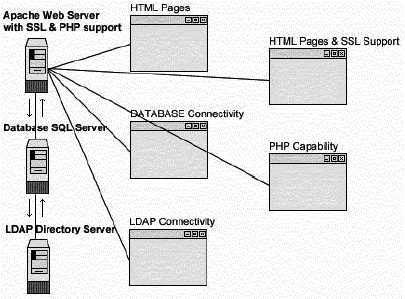

L
i n u x P a r
k
при
поддержке ВебКлуба |
Глава 19 Серверное программное обеспечение (Веб сервис) (Часть
1)В этой главе
Linux MM –
библиотека совместно используемой памяти
Веб-сервер
Apache
Конфигурации
PHP4 – язык
скриптов со стороны сервера
Perl
библиотека – CGI.pm
Организация
защиты Apache
Запуск Apache
с использованием chroot.
Оптимизация
Apache
|
 |
Краткий обзор.
Если вы планируете инсталлировать и использовать модули для веб
сервера Apache, разработанные третьими лицами, такими как mod_perl или mod_php,
то я рекомендую установить эту небольшую программу на вашем сервере. Она даст
увеличение производительности этих модулей. Другой пример, если вы захотите
инсталлировать Apache с поддержкой SSL для организации электронной коммерции в
Интернет, то MM позволит SSL протоколу использовать высокопроизводительный кэш
сессий, базирующийся на RAM вместо базирующегося на диске.
Как объяснено на веб сервере MM библиотеки совместно
используемой памяти: MM библиотека – это 2-уровневая абстрактная библиотека,
которая упрощает использование общей памяти между процессами, образованными в
результате операции fork, на платформе Unix. На первом уровне она скрывает все
платформо-зависимые детали реализации (распределение и блокирование) операций со
совместно используемыми сегментами памяти, а на втором уровн предоставляет
высокоуровневый API в стиле malloc(3) для удобного и хорошо известного пути
работы со структурами данных в этих общих сегментах памяти.
Библиотека реализована под условиями open-source (BSD-style)
лицензии. Изначально она была написана, как планировалось, для использования
внутри следующей версии веб сервера Apache, как базовая библиотека для
предоставления совместно используемых пулов памяти модулям Apache (потому что
сейчас, модули Apache могут использовать только память с неупорядоченным
хранением данных (heap-allocated memory), которые не используется совместно
между pre-forked процессами). Требования этой библиотеки в основном происходит
от комплексных модулей подобных mod_ssl, mod_perl и mod_php, которые извлекли бы
много выгоды из совместно используемых пулов памяти.
Эти инструкции предполагают.
Unix-совместимые
команды.
Путь к исходным кодам “/var/tmp” (возможны другие
варианты).
Инсталляция была проверена на Red Hat Linux 6.1 и 6.2.
Все шаги
инсталляции осуществляются суперпользователем “root”.
Mm версии 1.1.2
Пакеты.
Домашняя страница MM: http://www.engelschall.com/sw/mm/
Вы должны скачать:
mm-1.1.2.tar.gz
Тарболы.
Хорошей идеей будет создать список файлов
установленных в вашей системе до инсталляции MM и после, в результате, с помощью
утилиты diff вы сможете узнать какие файлы были установлены. Например,
До
инсталляции:
find /* > MM1
После инсталляции:
find /* >
MM2
Для получения списка установленных файлов:
diff MM1 MM2 > MM-Installed
Раскройте тарбол:
[root@deep /]#
cp mm-version.tar.gz /var/tmp
[root@deep /]# cd /var/tmp
[root@deep tmp]#
tar xzpf mm-version.tar.gz
КомпиляцияШаг 1
Переместитесь в новый каталог mm и введите следующие команды на
терминале
./configure \
--disable-shared
\
--prefix=/usr
Опции говорят MM:
- Отключить совместно используемые
библиотеки.
Шаг 2
Сейчас, мы должны скомпилировать и инсталлировать библиотеку
совместно используемой памяти:
[root@deep
mm-1.1.2]# make
[root@deep mm-1.1.2]# make test
[root@deep mm-1.1.2]# make
install
ЗАМЕЧАНИЕ. Команда “make test” создаст несколько важных
тестов, для проверки работоспособности программы.
Очистка после
работы[root@deep /]# cd
/var/tmp
[root@deep tmp]# rm -rf mm-version/ mm-version.tar.gz
Команды “rm” будет удалять все файлы с исходными кодами,
которые мы использовали при компиляции и инсталляции mm. Также будет удален
сжатый архив mm.
Дополнительная документация
Для получения большей информации, вы можете прочитать несколько
страниц руководства:
mm-config (1) – конфигурационный файл библиотеки MM
Инсталлированные файлы/usr/bin/mm-config
/usr/include/mm.h
/usr/lib/libmm.la
/usr/lib/libmm.a
/usr/man/man1/mm-config.1
/usr/man/man3/mm.3
Общий обзор.
Apache – это, в настоящее время, наиболее широко используемый
HTTP-сервер в мире. Он обогнал всех коммерческих и свободно-распространяемых
конкурентов на рынке, и предоставляет огромное число возможностей. Также это
наиболее популярный веб сервер под Linux. Веб сервера подобные Apache, в
простейшем случае, выводят HTML страницы, располагающиеся на сервере, на
клиентские броузеры, понимающие HTML код. Используясь совместно с модулями и
программами третьих лиц, они становятся полнофункциональными программами,
которые предоставляют надежные и полезные сервисы клиентским броузерам.
Я думаю, что большинство людей, читающих эту книгу, специально
интересуются тем, как инсталлировать веб сервер Apache с обеспечением
максимальной безопасности и оптимизацией. В своей базовой инсталляции, Apache
устанавливать не труднее, чем любое другое программное обеспечение, описанное в
этой книге. Трудности начинаю возникать, когда вы хотите добавить некоторые
программы и модули третьих лиц.
Существует много возможностей, вариантов и опций для
инсталляции Apache. Так, в дальнейшем, мы приведем вам пошаговый пример, где мы
покажем как создать Apache с модулями и программами третьих лиц: PHP4,
возможностью соединения с LDAP и т.д. Конечно, создание этих программ
опционально, и вы можете свободно компилировать то, что захотите (например, вы
можете решить скомпилировать Apache с поддержкой PHP4, но без SSL или
PostgreSQL). Для упрощения мы подразумеваем некоторые предварительные требования
для каждого примера. Если они не соответствуют вашей ситуации, просто
скорректируйте шаги.
В этой главе, мы объясним и охватим некоторые общие пути
благодаря которым вы можете скорректировать конфигурацию для улучшения
производительности сервера. Также, для особо интересующихся пользователей, мы
покажем процедуру запуска Apache не от имени пользователя root и в chroot- овом
окружении для оптимальной безопасности.

Эти инструкции предполагают.
Unix-совместимые
команды.
Путь к исходным кодам “/var/tmp” (возможны другие
варианты).
Инсталляция была проверена на Red Hat Linux 6.1 и 6.2.
Все шаги
инсталляции осуществляются суперпользователем “root”.
Apache версии
1.3.12
Mod_SSL версии 2.6.4-1.3.12
Mod_Perl версии 1.24
Mod_PHP версии
4.0.0
Пакеты.
Домашняя страница Apache: http://www.apache.org/
FTP
сервер Apache: 63.211.145.10
Вы должны скачать:
apache_1.3.12.tar.gz
Домашняя страница Mod_SSL: http://www.modssl.org/
FTP
сервер Mod_SSL: 129.132.7.171
Вы должны скачать:
mod_ssl-2.6.4-1.3.12.tar.gz
Домашняя страница Mod_Perl: http://perl.apache.org/
FTP
сервер Mod_Perl: 63.211.145.10
Вы должны скачать:
mod_perl-1.24.tar.gz
Домашняя страница Mod_PHP: http://www.php.net/
Вы должны скачать:
php-4.0.0.tar.gz
Предварительные требования.
- Если вы хотите включить в Apache поддержку SSL шифрования, то OpenSSL
должен быть уже проинсталлирован на вашей системе.
- Если вы хотите включить в Apache поддержку соединений с базой данных
PosgreSQL, то PosgreSQL должен быть уже проинсталлирован на вашей системе.
- Если вы хотите включить в Apache поддержку высокопроизводительного
кэширования сессий, базирующегося на RAM, то MM должен быть уже
проинсталлирован на вашей системе.
- Если вы хотите включить в Apache поддержку соединений с сервером каталогов
OpenLDAP, то OpenLDAP должен быть уже проинсталлирован на вашей системе.
- Если вы хотите включить в Apache поддержку IMAP & POP, то IMAP &
POP должен быть уже проинсталлирован на вашей системе.
ЗАМЕЧАНИЕ. Для большей информации о требуемых программах
смотрите соответствующие главы в этой книге.
Тарболы.
Хорошей идеей будет создать список файлов
установленных в вашей системе до инсталляции Apache и после, в результате, с
помощью утилиты diff вы сможете узнать какие файлы были установлены.
Например,
До инсталляции:
find /* >
Apache1
После инсталляции:
find /* >
Apache2
Для получения списка установленных файлов:
diff Apache1 Apache2 > Apache-Installed
Раскройте тарбол:
[root@deep /]#
cp apache_version.tar.gz /var/tmp
[root@deep /]# cp
mod_ssl-version-version.tar.gz /var/tmp
[root@deep /]# cp
mod_perl-version.tar.gz /var/tmp
[root@deep /]# cp php-version.tar.gz
/var/tmp
[root@deep /]# cd /var/tmp/
[root@deep tmp]# tar xzpf
apache_version.tar.gz
[root@deep tmp]# tar xzpf
mod_ssl-version-version.tar.gz
[root@deep tmp]# tar xzpf
mod_perl-version.tar.gz
[root@deep tmp]# tar xzpf
php-version.tar.gz
Компиляция и оптимизация
Шаг 1
Веб сервер Apache, подобно многим приложениям, которые мы
инсталлировали, не должен запускаться из-под суперпользователя root. Из этих
соображений мы должны создать специального пользователя, который имеет
минимальный доступ в систему и предназначен только для запуска демона веб
сервера.
[root@deep /]# useradd -c “Apache
Server” -u 80 -s /bin/false -r -d /home/httpd www 2>/dev/null || :
Шаг 2Внедрение модуля mod-ssl в дерево исходных кодов
Apache
Если вы хотите использовать и включить поддержку SSL шифрования
данных в ваш веб сервер Apache, то переместитесь в новый каталог с исходными
кодами mod_ssl (cd mod_ssl-version-version/) и введите следующие команды на
вашем терминале:
CC="egcs" \
CFLAGS="-O9
-funroll-loops -ffast-math -malign-double -mcpu=pentiumpro -march=pentiumpro
-fomit-frame-pointer -fno-exceptions" \
./configure
\
--with-apache=../apache_1.3.12 \
--with-crt=/etc/ssl/certs/server.crt
\
--with-key=/etc/ssl/private/server.key
Опция “--with-apache” определяет месторасположения каталога с
исходными кодами Apache (мы допустили, что в нашем примере используем Apache
версии 1.3.12), опция “--with-crt” определяет месторасположения вашего
существующего публичного ключа для SSL шифрования, и опция “--with-key”
определяет месторасположение вашего существующего приватного ключа для SSL
шифрования.
ЗАМЕЧАНИЕ. Программное обеспечение OpenSSL должен быть
уже проинсталлировано на вашем сервере, публичный и приватные ключи тоже должны
уже существовать или быть созданы, или вы получите сообщение об ошибке во время
конфигурирования модуля mod_ssl. Смотрите главу 16 этой книги “Серверное
программное обеспечение (Сетевой сервис шифрования)”, для большей
информации.
Шаг 3Улучшение параметра MaxClients в Apache
По умолчанию в конфигурационном файле Apache (httpd.conf)
максимальное число устанавливаемое для параметра MaxClients Parameter равно 256.
Для загруженных сайтов и для улучшения производительности рекомендуется
увеличить этот параметр. Вы можете сделать это редактируя файл
“src/include/httpd.h” в дереве исходных кодов Apache и изменить это значение по
умолчанию.
Перейдите в каталог с исходными кодами Apache (cd
../apache_1.3.12/) и редактируйте файл httpd.h (vi +333 src/include/httpd.h),
изменив:
#define HARD_SERVER_LIMIT
256На:
#define HARD_SERVER_LIMIT
1024
ЗАМЕЧАНИЕ. Если вы настраиваете Apache без поддержки
mod_ssl, то нужно будет редактировать строку 316, а не 333.
Шаг
4Преконфигурирование Apache для дальнейшего конфигурирования PHP4
Если вы хотите использовать и включить поддержку PHP4 в ваш веб
сервер Apache, то перейдите в каталог с исходными кодами Apache (cd
apache_1.3.12/) и выполните следующие команды:
CC="egcs" \
OPTIM="-O9 -funroll-loops -ffast-math -malign-double
-mcpu=pentiumpro -march=pentiumpro -fomit-frame-pointer -fno-exceptions"
\
CFLAGS="-DDYNAMIC_MODULE_LIMIT=0" \
./configure
\
--prefix=/home/httpd \
--bindir=/usr/bin \
--sbindir=/usr/sbin
\
--libexecdir=/usr/lib/apache \
--includedir=/usr/include/apache
\
--sysconfdir=/etc/httpd/conf \
--localstatedir=/var
\
--runtimedir=/var/run \
--logfiledir=/var/log/httpd
\
--datadir=/home/httpd \
--proxycachedir=/var/cache/httpd
\
--mandir=/usr/man
ЗАМЕЧАНИЕ. Этот шаг необходим только если вы хотите
включить поддержку PHP4 в ваши исходные коды Apache. Опция
“-DDYNAMIC_MODULE_LIMIT=0” будет отключать использование динамически загружаемых
модулей и улучшит производительность.
Конфигурирование PHP4 и внедрение
его в исходные коды Apache
Сейчас, перейдите в каталог с исходными кодами php4 (cd
../php-4.0) и введите следующие команды:
1) Редактируйте файл php_pgsql.h (vi +46 ext/pgsql/php_pgsql.h)
и измените следующие строки:
#include
<libpq-fe.h>
#include <libpq/libpq-fs.h>
На:
#include </usr/include/pgsql/libpq-fe.h>
#include
</usr/include/pgsql/libpq/libpq-fs.h>
Эти модификации в файле “php_pgsql.h” необходимы, чтобы указать
месторасположения заголовочных файлов “libpq-fe.h” и “libpq-fs.h” для базы
данных PostgreSQL во время конфигурирования PHP4. В Red Hat Linux библиотеки
PostgreSQL находятся в (/usr/include/pgsql).
2) Сейчас, мы должны сконфигурировать и инсталлировать PHP4 на
нашем Linux сервере:
CC="egcs" \
CFLAGS="-O9
-funroll-loops -ffast-math -malign-double -mcpu=pentiumpro -march=pentiumpro
-fomit-frame-pointer -fno-exceptions -I/usr/include/openssl" \
./configure
\
--prefix=/usr \
--with-exec-dir=/usr/bin
\
--with-apache=../apache_1.3.12 \
--with-config-file-path=/etc/httpd
\
--disable-debug \
--enable-safe-mode \
--with-imap \ (если вы
хотите поддержку IMAP & POP).
--with-ldap
\ (если вы хотите поддержку сервиса каталогов LDAP).
--with-pgsql \ (если вы хотите поддержку баз данных
PostgreSQL).
--with-mm
\
--enable-inline-optimization \
--with-gnu-ld
\
--enable-memory-limit
Эти опции говорят PHP4:
- Компилировать без символов отладки.
- Включить safe mode по умолчанию.
- Включить поддержку IMAP & POP.
- Включить поддержку сервиса каталогов LDAP.
- Включить поддержку базы данных PostgresSQL.
- Включить поддержку mm для улучшения производительности.
- Включить внутренний оптимизацию для лучшей производительности.
- Компилировать с поддержкой ограничения памяти.
- компилятору C использовать GNU ld.
[root@deep php-4.0]# make
[root@deep php-4.0]# make
install
Шаг 5Внедрение mod_perl в исходные коды
Если вы хотите использовать и включить поддержку языка
программирования Perl в ваш веб-сервер Apache, то перейдите к каталог с
исходными кодами mod_perl (cd ../mod_perl-1.24/) и введите следующие команды на
вашем терминале:
perl Makefile.PL
\
EVERYTHING=1 \
APACHE_SRC=../apache_1.3.12/src \
USE_APACI=1
\
PREP_HTTPD=1 \
DO_HTTPD=1
[root@deep mod_perl-1.24]#
make
[root@deep mod_perl-1.24]# make install
Шаг 6
Создание/Инсталляция Apache с/без mod_ssl +- PHP4 и/или
mod_perl Сейчас, когда вы добавили в исходные коды Apache все модули, которые
хотели, наступило время скомпилировать и проинсталлировать его. Переместитесь в
каталог с исходными кодами Apache (cd ../apache_1.3.12/) и введите следующие
команды на вашем терминале:
SSL_BASE=SYSTEM
\ (требуется если вы хотите включить поддержку mod_ssl в
Apache).
EAPI_MM=SYSTEM \ (требуется если
вы хотите включить поддержку mm библиотеку разделяемой памяти в
Apache).
CC="egcs" \
OPTIM="-O9 -funroll-loops
-ffast-math -malign-double -mcpu=pentiumpro -march=pentiumpro
-fomit-frame-pointer -fno-exceptions" \
CFLAGS="-DDYNAMIC_MODULE_LIMIT=0"
\
./configure \
--prefix=/home/httpd \
--bindir=/usr/bin
\
--sbindir=/usr/sbin \
--libexecdir=/usr/lib/apache
\
--includedir=/usr/include/apache \
--sysconfdir=/etc/httpd/conf
\
--localstatedir=/var \
--runtimedir=/var/run
\
--logfiledir=/var/log/httpd \
--datadir=/home/httpd
\
--proxycachedir=/var/cache/httpd \
--mandir=/usr/man
\
--add-module=src/modules/experimental/mod_mmap_static.c \ (требуется
если вы хотите использовать mod_mmap, смотрите секцию “Оптимизация Apache” в
этой главе для большей информации).
--add-module=src/modules/standard/mod_auth_db.c \ (требуется если
вы хотите использовать mod_auth_db, смотрите секцию “Безопасность Apache” в этой
главе для большей информации).
--enable-module=ssl \ (требуется если вы хотите включить
поддержку mod_ssl в ваш Apache).
--enable-rule=SSL_SDBM \ (требуется если вы хотите включить
поддержку mod_ssl в ваш Apache).
--disable-rule=SSL_COMPAT \ (требуется если вы хотите включить
поддержку mod_ssl в ваш Apache).
--activate-module=src/modules/php4/libphp4.a \ (требуется если вы
хотите включить поддержку PHP4 в ваш Apache).
--enable-module=php4 \ (требуется если вы хотите включить
поддержку PHP4 в ваш Apache).
--activate-module=src/modules/perl/libperl.a \ (требуется если вы
хотите включить поддержку mod_perl в ваш Apache).
--enable-module=perl \ (требуется если вы хотите включить
поддержку mod_perl в ваш Apache).
--disable-module=status \
--disable-module=userdir
\
--disable-module=negotiation \
--disable-module=autoindex
\
--disable-module=asis \
--disable-module=imap \
--disable-module=env
\
--disable-module=actions
Эти опции говорят Apache выполнить следующие установки:
- модуль mod_mmap для улучшения производительности.
- модуль mod_auth_db для парольной аутентификации пользователей.
- модуль mod_ssl для шифрования данные и безопасного соединения.
- модуль mod_php4 для поддержки языка подготовки сценариев на стороне
сервера php и улучшения загрузки веб страниц созданных в PHP.
- модуль mod_perl для лучшей безопасности и производительности работы cgi
скриптов.
- выключить модуль status
- выключить модуль userdir
- выключить модуль negotiation
- выключить модуль autoindex
- выключить модуль asis
- выключить модуль imap
- выключить модуль env
- выключить модуль actions
ЗАМЕЧАНИЕ. Важно заметить, что удаление всех
необязательных модулей во время конфигурирования улучшит производительность
вашего веб сервера Apache. В нашей конфигурации приведенной выше, мы удалили
большинство неиспользуемых модулей для уменьшения времени загрузки и ограничения
риска безопасности вашего веб сервера. Смотрите документацию Apache, чтобы
получить информацию о каждом удаленном модуле.
Шаг 7
Сейчас, мы должны инсталлировать Apache на вашем Linux
сервере:
[root@deep apache_1.3.12]#
make
[root@deep apache_1.3.12]# make install
[root@deep apache_1.3.12]# rm
-f /usr/sbin/apachectl
[root@deep apache_1.3.12]# rm -f
/usr/man/man8/apachectl.8
[root@deep apache_1.3.12]# rm -rf
/home/httpd/icons/
[root@deep apache_1.3.12]# rm -rf
/home/httpd/htdocs/
[root@deep apache_1.3.12]# cd
/var/tmp/php-4.0
[root@deep php-4.0.0]# install -m 644 php.ini.dist
/usr/lib/php.ini
[root@deep php-4.0.0]# rm -rf
/etc/httpd/conf/ssl.crl/
[root@deep php-4.0.0]# rm -rf
/etc/httpd/conf/ssl.crt/
[root@deep php-4.0.0]# rm -rf
/etc/httpd/conf/ssl.csr/
[root@deep php-4.0.0]# rm -rf
/etc/httpd/conf/ssl.key/
[root@deep php-4.0.0]# rm -rf
/etc/httpd/conf/ssl.prm/
[root@deep php-4.0.0]# rm -f
/etc/httpd/conf/srm.conf srm.conf.default access.conf
access.conf.default
Команда “make” будет компилировать все файлы с исходными кодами
в исполняемые двоичные, команда “make install” будет инсталлировать исполняемые
и сопутствующие им файлы в тербуемые места. Команда “rm -f” удалит небольшой
скрипт “apachectl” отвечающий за запуск и остановку демона Apache, так как мы
используем для этого срипт “httpd” находящийся в “/etc/rc.d/init.d/”. Мы также
удаляем каталог “/home/httpd/icons”, который используется веб сервером Apache
при автоматической индексации файлов. Эта возможность несет в себе риск
безопасности и из-за этого мы ее отключили. Каталог “/home/httpd/htdocs”
содержит все файлы с документацией на Apache, поэтому после прочтения, мы
спокойно можем его удалить. Команда “install - m” проинсталлирует файл
“php.ini.dist” в каталог “/etc/httpd/” и переименует его в “php.ini”; Этот файл
контролирует многие аспекты работы PHP. Каталоги “ssl.crl”, “ssl.crt”,
“ssl.csr”, “ssl.key” и “ssl.prm” в “/etc/httpd/conf” связаны с SSL, и в них
хранятся публичные и приватные ключи. Так как для хранения ключей мы используем
другой путь, “/etc/ssl/”, мы можем их спокойно удалить. В заключении, мы удаляем
неиспользуемые файлы “srm.conf”, “srm.conf.default”, “access.conf” и
“access.conf.default”, вместо которых сейчас используется одни файл
“httpd.conf”.
Очистка после работы.[root@deep /]# cd /var/tmp
[root@deep tmp]# rm -rf apache-version/
apache-version.tar.gz mod_ssl-version-version/ mod_ssl-version-version.tar.gz
php-version/ php-version.tar.gz mod_perl-version/
mod_perl-version.tar.gz
Команды “rm” будет удалять все файлы с исходными кодами,
которые мы использовали при компиляции и инсталляции Apache, mod_ssl, mod_perl и
php. Также будут удалены сжатые архивы Apache, mod_ssl, mod_perl и php из
каталога “/var/tmp”.
Конфигурационные файлы для разных сервисов очень зависят от
ваших нужд и сетевой архитектуры. Кто-то хочет установить Apache только чтобы
показывать веб страницы; другой хочет использовать его для работы с базой данных
и e- коммерции с поддержкой SSL и т.д. В этой книге, мы предоставляем вам файл
“httpd.conf”, с установками для PHP, Perl, SSL, LDAP и парольной аутентификации,
чтобы показать вам различные возможности. Все программное обеспечение, описанное
в книге, имеет определенный каталог и подкаталог в архиве “floppy.tgz”,
включающей все конфигурационные файлы для всех программ. Если вы скачаете этот
файл, то вам не нужно будет вручную воспроизводить файлы из книги, чтобы создать
свои файлы конфигурации. Скопируйте файлы связанные с Apache из архива, измените
их под свои требования и поместите в нужное место так, как это описано ниже.
Файл с конфигурациями вы можете скачать с адреса: http://www.openna.com/books/floppy.tgz
Для запуска веб сервера Apache следующие файлы должны быть
созданы или скопированы на ваш сервер.
Копируйте httpd.conf в каталог “/etc/httpd/conf/”.
Копируйте
httpd в каталог “/etc/rc.d/init.d/”.
Копируйте apache в каталог
“/etc/logrotate.d/”.
Вы можете взять эти файлы из нашего архива floppy.tgz.
Конфигурация файла “/etc/httpd/conf/httpd.conf”
Файл “httpd.conf” – это основной конфигурационный файл для веб
сервера Apache. Существует большое количество различных опций про которые вы
должны прочитать в документации к Apache. Следующая конфигурация представляет из
себя пример минимальной рабочей конфигурации для Apache, с поддержкой SSL. Также
важно заметить, что мы комментируем только параметры связанные с безопасностью и
оптимизацией, а все остальные оставляем для вашего изучения.
Редактируйте
файл httpd.conf (vi /etc/httpd/conf/httpd.conf) и добавьте/измените:
### Секция 1: Глобальное окружение
#
ServerType standalone
ServerRoot "/etc/httpd"
PidFile /var/run/httpd.pid
ResourceConfig /dev/null
AccessConfig /dev/null
Timeout 300
KeepAlive On
MaxKeepAliveRequests 0
KeepAliveTimeout 15
MinSpareServers 16
MaxSpareServers 64
StartServers 16
MaxClients 512
MaxRequestsPerChild 100000
### Секция 2: 'Основная' конфигурация сервера
#
Port 80
<IfDefine SSL>
Listen 80
Listen 443
</IfDefine>
User www
Group www
ServerAdmin [email protected]
ServerName www.openna.com
DocumentRoot "/home/httpd/ona"
<Directory />
Options None
AllowOverride None
Order deny,allow
Deny from all
</Directory>
<Directory "/home/httpd/ona">
Options None
AllowOverride None
Order allow,deny
Allow from all
</Directory>
<Files .pl>
Options None
AllowOverride None
Order deny,allow
Deny from all
</Files>
<IfModule mod_dir.c>
DirectoryIndex index.htm index.html index.php index.php3 default.html index.cgi
</IfModule>
#<IfModule mod_include.c>
#Include conf/mmap.conf
#</IfModule>
UseCanonicalName On
<IfModule mod_mime.c>
TypesConfig /etc/httpd/conf/mime.types
</IfModule>
DefaultType text/plain
HostnameLookups Off
ErrorLog /var/log/httpd/error_log
LogLevel warn
LogFormat "%h %l %u %t \"%r\" %>s %b \"%{Referer}i\" \"%{User-Agent}i\""
combined
SetEnvIf Request_URI \.gif$ gif-image
CustomLog /var/log/httpd/access_log combined env=!gif-image
ServerSignature Off
<IfModule mod_alias.c>
ScriptAlias /cgi-bin/ "/home/httpd/cgi-bin/"
<Directory "/home/httpd/cgi-bin">
AllowOverride None
Options None
Order allow,deny
Allow from all
</Directory>
</IfModule>
<IfModule mod_mime.c>
AddEncoding x-compress Z
AddEncoding x-gzip gz tgz
AddType application/x-tar .tgz
</IfModule>
ErrorDocument 500 "The server made a boo boo.
ErrorDocument 404 http://192.168.1.1/error.htm
ErrorDocument 403 "Access Forbidden -- Go away.
<IfModule mod_setenvif.c>
BrowserMatch "Mozilla/2" nokeepalive
BrowserMatch "MSIE 4\.0b2;" nokeepalive downgrade-1.0 force-response-1.0
BrowserMatch "RealPlayer 4\.0" force-response-1.0
BrowserMatch "Java/1\.0" force-response-1.0
BrowserMatch "JDK/1\.0" force-response-1.0
</IfModule>
### Секция 3: Виртуальные хосты
#
<IfDefine SSL>
AddType application/x-x509-ca-cert .crt
AddType application/x-pkcs7-crl .crl
</IfDefine>
<IfModule mod_ssl.c>
SSLPassPhraseDialog builtin
SSLSessionCache dbm:/var/run/ssl_scache
SSLSessionCacheTimeout 300
SSLMutex file:/var/run/ssl_mutex
SSLRandomSeed startup builtin
SSLRandomSeed connect builtin
SSLLog /var/log/httpd/ssl_engine_log
SSLLogLevel warn
</IfModule>
<IfDefine SSL>
<VirtualHost _default_:443>
DocumentRoot "/home/httpd/ona"
ServerName www.openna.com
ServerAdmin [email protected]
ErrorLog /var/log/httpd/error_log
SSLEngine on
SSLCipherSuite
ALL:!ADH:RC4+RSA:+HIGH:+MEDIUM:+LOW:+SSLv2:+EXP:+eNULL
SSLCertificateFile /etc/ssl/certs/server.crt
SSLCertificateKeyFile /etc/ssl/private/server.key
SSLCACertificatePath /etc/ssl/certs
SSLCACertificateFile /etc/ssl/certs/ca.crt
SSLCARevocationPath /etc/ssl/crl
SSLVerifyClient none
SSLVerifyDepth 10
SSLOptions +ExportCertData +StrictRequire
SetEnvIf User-Agent ".*MSIE.*" nokeepalive ssl-unclean-shutdown
SetEnvIf Request_URI \.gif$ gif-image
CustomLog /var/log/httpd/ssl_request_log \
"%t %h %{SSL_PROTOCOL}x %{SSL_CIPHER}x \"%r\" %b" env=!gif-image
</VirtualHost>
</IfDefine>
Этот файл httpd.conf говорит следующее:
ServerType standalone
Опция “ServerType” определяет
как Apache должен быть запущен. Вы можете запустить его из суперсервера inetd
или как автономный демон. Для лучшей производительности и скорости рекомендуется
запускать Apache как автономный демон.
ServerRoot "/etc/httpd"
Опция “ServerRoot” определяет
каталог, являющийся корневым для сервера. По этому пути определяется
месторасположения конфигурационных файлов.
PidFile /var/run/httpd.pid
Опция “PidFile” определяет
месторасположение файла в котором будет хранится информация об id демона, когда
он запущен. Эта опция требуется только если вы запускаете Apache в автономном
режиме.
ResourceConfig /dev/null
Опция “ResourceConfig”
определяет расположение старого файла “srm.conf”, который Apache читал после
прочтения файла “httpd.conf”. Когда вы устанавливаете эту опцию в “/dev/null”,
Apache позволит вам включить содержимое этого файла в файл “httpd.conf” и вы
получите только один файл для конфигурирования.
AccessConfig /dev/null
Опция “AccessConfig”
определяет расположение старого файла “access.conf”, который Apache читал после
прочтения файла “srm.conf”. Когда вы устанавливаете эту опцию в “/dev/null”,
Apache позволит вам включить содержимое этого файла в файл “httpd.conf” и вы
получите только один файл для конфигурирования.
Timeout 300
Опция “Timeout” определяет время, которое
Apache будет ждать до получения запросов GET, POST, PUT и ACK на передачу. Вы
можете спокойно оставить значение этой опции как это принято по умолчанию.
KeepAlive On
Опция “KeepAlive”, если установлена в
"On", определяет возможность установления постоянных соединений на этом веб
сервере. Для лучшей производительности, рекомендуется установить этот параметр в
“On,” и разрешить обработку более одного запроса на одно соединение.
MaxKeepAliveRequests 0
Опция “MaxKeepAliveRequests”
определяет число запросов, которое может обработать сервер на одно соединение,
если опция “KeepAlive” установлена в “On”. Когда значение равно 0, тогда может
обрабатываться неограниченное число запросов. Для лучшей производительности,
рекомендуется устанавливать этот параметр в 0.
KeepAliveTimeout 15
Опция “KeepAliveTimeout”
определяет как долго, в секундах, Apache будет ждать поступления новых запросов
до закрытия соединения. “15” секунд - хорошее среднее значение для
производительности сервера.
MinSpareServers 16
Опция “MinSpareServers” определяет
минимальное число неработающих дочерних процессов сервера, которые не
обрабатывают запросы. Это важный настроечный параметр, влияющий на
производительность веб сервера Apache. Значение “16” рекомендуется различными
тестами на производительность в Интернет.
MaxSpareServers 64
Опция “MaxSpareServers” определяет
максимальное число неработающих дочерних процессов сервера, которые не
обрабатывают запросы. Это тоже важный настроечный параметр, влияющий на
производительность веб сервера Apache. Значение “64” рекомендуется различными
тестами на производительность в Интернет.
StartServers 16
Опция “StartServers” определяет число
дочерних серверных процессов, которые будут созданы при запуске Apache. Это тоже
важный настроечный параметр, влияющий на производительность веб сервера Apache.
Значение “16” рекомендуется различными тестами на производительность в
Интернет.
MaxClients 512
Опция “MaxClients” определяет число
одновременных запросов, которые может обработать Apache. Это тоже важный
настроечный параметр, влияющий на производительность веб сервера Apache.
Значение “512” рекомендуется различными тестами на производительность в
Интернет.
MaxRequestsPerChild 100000
Опция
“MaxRequestsPerChild” определяет число запросов, которое индивидуальный дочерний
серверный процесс может обработать, после чего автоматически умрет. Это тоже
важный настроечный параметр, влияющий на производительность веб сервера
Apache.
User www
Опция “User” определяет UID, под которым
Apache будет запускаться. Очень важно создать нового пользователя, который имеет
минимальные права доступа к системе и единственным его предназначением будет
запуск демона веб сервера.
Group www
Опция “Group” определяет GID под которым
Apache будет запускаться. Важно создать новую группу, которая имеет минимальные
права доступа к системе и единственным ее предназначением будет запуск демона
веб сервера.
DirectoryIndex index.htm index.html index.php index.php3
default.html index.cgi
Опция “DirectoryIndex” определяет файлы
используемые Apache как заранее созданный HTML индекс каталога, если Apache не
может найти индексные страницы по умолчанию, он будет рассматривать следующий
элемент этого параметра. Для улучшения производительности вашего веб сервера,
рекомендуется индексные страницы используемые на вашем сервере по умолчанию
поместить в этом списке на первом месте.
Include conf/mmap.conf
Опция “Include” определяет
расположение другого файла, который вы можете включить в ваш серверный
конфигурационный файл (httpd.conf). В нашем случае, мы включаем файл “mmap.conf”
находящийся в каталоге “/etc/httpd/conf”. Этот файл (“mmap.conf”) отображает
файлы в памяти для более быстрого их предоставления. Смотрите секцию
“Оптимизация Apache” для большей информации.
HostnameLookups Off
Опция “HostnameLookups”, если
установлена в “Off”, определяет, что DNS lookups отключен. Рекомендуется
устанавливать эту опцию в “Off” для сокращения времени сетевого трафика и
улучшения производительности веб сервера Apache.
Конфигурация файла “/etc/logrotate.d/apache”
Сконфигурируем файл “/etc/logrotate.d/apache” для
автоматической ротации файлов регистрации Apache каждую неделю.
Создайте файл
apache (touch /etc/logrotate.d/apache) и добавьте в него:
/var/log/httpd/access_log {
missingok
postrotate
/usr/bin/killall -HUP httpd
endscript
}
/var/log/httpd/error_log {
missingok
postrotate
/usr/bin/killall -HUP httpd
endscript
}
/var/log/httpd/ssl_request_log {
missingok
postrotate
/usr/bin/killall -HUP httpd
endscript
}
/var/log/httpd/ssl_engine_log {
missingok
postrotate
/usr/bin/killall -HUP httpd
endscript
}
ЗАМЕЧАНИЕ. Строки для автоматической ротации файлов регистрации
SSL “ssl_request_log” и “ssl_engine_log” включены в этот файл. Если вы решили
запускать Apache без поддержки SSL, вы должны удалить их.
Конфигурация скрипта “/etc/rc.d/init.d/httpd”.
Настроим ваш скрипт “/etc/rc.d/init.d/httpd”, который
предназначен для запуска и остановки веб сервера Apache.
Создайте файл httpd
(touch /etc/rc.d/init.d/httpd) и добавьте в него:
#!/bin/sh
#
# Скрипт для запуска веб сервера Apache
#
# chkconfig: 345 85 15
# описание: Apache – это World Wide Web сервер. Он используется для
# предоставления HTML файлов и CGI.
# имя процесса: httpd
# pid файл: /var/run/httpd.pid
# конфигурационный файл: /etc/httpd/conf/httpd.conf
# Библиотека исходных функций.
. /etc/rc.d/init.d/functions
# Смотрите как мы вызываем.
case "$1" in
start)
echo -n "Starting httpd: "
daemon httpd -DSSL
echo
touch /var/lock/subsys/httpd
;;
stop)
echo -n "Shutting down http: "
killproc httpd
echo
rm -f /var/lock/subsys/httpd
rm -f /var/run/httpd.pid
;;
status)
status httpd
;;
restart)
$0 stop
$0 start
;;
reload)
echo -n "Reloading httpd: "
killproc httpd -HUP
echo
;;
*)
echo "Usage: $0 {start|stop|restart|reload|status}"
exit 1
esac
exit 0
Сейчас, сделайте этот скрипт исполняемым и измените права
доступа:
[root@deep /]# chmod 700
/etc/rc.d/init.d/httpd
Создайте символические rc.d ссылки для Apache:
[root@deep /]# chkconfig --add httpd
Запустите ваш новый сервер Apache вручную:
[root@deep /]# /etc/rc.d/init.d/httpd start
Starting httpd: [ OK ]
ЗАМЕЧАНИЕ. Опция “-DSSL” будет запускать Apache в режиме SSL.
Если вы хотите запустить Apache в нормальном режиме, то удалите “-DSSL”
ближайшую к строке, которая читается “daemon httpd”.